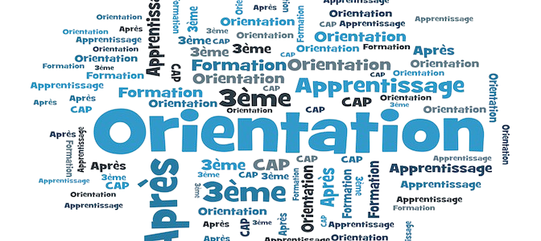
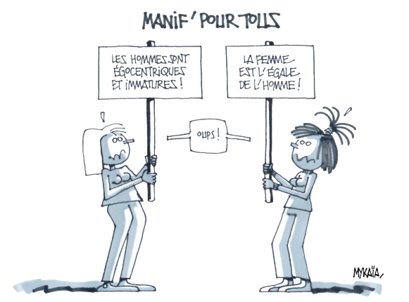
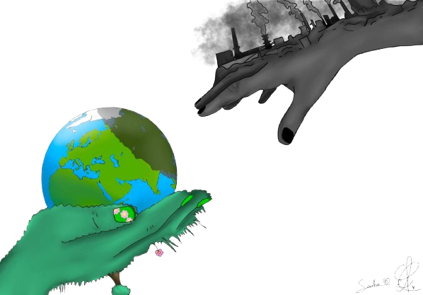

Nos engagements (RSE)
Chez Sopra Steria, nous utilisons la technologie pour construire un futur responsable : protéger la planète, soutenir nos collaborateurs et contribuer positivement à la société grâce à des projets engagés et durables.

Préparer la relève et partager les savoirs
Sopra Steria place les jeunes au cœur de ses actions : stages de 3ᵉ, alternances, Digital School… autant d'initiatives pour découvrir le numérique et se former aux métiers d'avenir.
Sopra Steria, le numérique responsable
Sopra Steria accompagne la transformation digitale tout en préservant la planète grâce à sa Sustainable IT Platform, un outil collaboratif qui mesure et réduit l’impact environnemental du numérique.

Des engagements sociaux pour plus d'inclusion
Sopra Steria agit pour que la transformation numérique profite à tous. L’entreprise favorise l’égalité femmes-hommes, accompagne les personnes en situation de handicap et valorise la diversité comme une force. Chaque action vise à créer un environnement inclusif et respectueux, où chacun peut développer son talent.
Transition écologique

Sopra Steria agit pour un numérique responsable : prolonger les équipements, réduire les déchets et émissions, et impliquer tous ses partenaires pour protéger la planète.
L'innovation numérique
Sopra Steria utilise l'intelligence artificielle et le numérique pour répondre aux défis environnementaux tout en limitant leur impact.